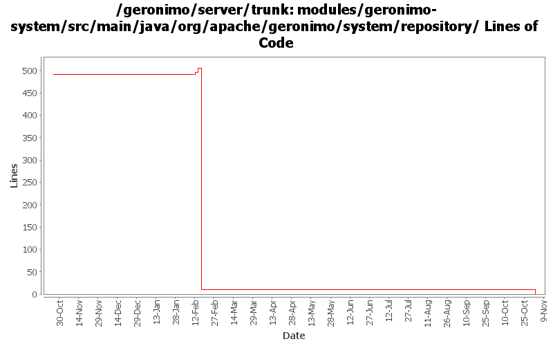

[root]/modules/geronimo-system/src/main/java/org/apache/geronimo/system/repository

| Author | Changes | Lines of Code | Lines per Change |
|---|---|---|---|
| Totals | 26 (100.0%) | 41 (100.0%) | 1.5 |
| djencks | 3 (11.5%) | 19 (46.3%) | 6.3 |
| gdamour | 5 (19.2%) | 16 (39.0%) | 3.2 |
| jlaskowski | 1 (3.8%) | 6 (14.6%) | 6.0 |
| prasad | 6 (23.1%) | 0 (0.0%) | 0.0 |
| kevan | 9 (34.6%) | 0 (0.0%) | 0.0 |
| jdillon | 2 (7.7%) | 0 (0.0%) | 0.0 |
GERONIMO-3565. Modules distributed amongst framework/modules and plugins
0 lines of code changed in 6 files:
Second attempt to change the way the online/offline deployers and the JSR88
deployment driver work. The first attempt was breaking the TCK amd the
eclipse plugin.
Online deployer, i.e. deployer.jar, boots a Kernel to load its dependencies,
e.g. geronimo-deploy-tool, and registers the available ModuleConfigurers with
the DeploymentManager.
ModuleConfigurers to be registered are loaded by the persistent configuration
list jsr88-configurer-config.xml.
In the case of an offline deployment, the online deployer starts the
offline-deployer configuration within the same Kernel. In turn, the
offline-deployer configuration starts a list of configurations to register
the available module builders.
Add a log4j configuration for the online deployer.
DeploymentFactoryBootstrapper is the new JSR88 deployment driver. It boots a
kernel; starts the configuration list jsr88-configurer-config.xml; retrieves
the "actual" DeploymentFactory implementation from the kernel; and delegates
to this retrieved imoplementation.
The JSR88 JAR driver is now named jsr88-deploymentfactory.jar.
This fixes:
* GERONIMO-2794 - Improve online deployer to register ModuleConfigurers from the repository; and
* GERONIMO-2767 - Minimize side effects of the offline deployer
10 lines of code changed in 4 files:
GERONIMO-2814 add flag to Repository so it can resolve against base or server location
19 lines of code changed in 3 files:
META-INF/geronimo-dependency.xml should only be loaded from the URL
of the provided Artifact and the system class loader must be excluded
from the search as it may result in an infinite loop.
GERONIMO-2823 System class loader should not be searched for resource
META-INF/geronimo-dependency.xml by AbstractRepository.getDependencies
6 lines of code changed in 1 file:
GERONIMO-2537 Update the src headers in server/trunk/modules to be compliant with the new ASF src header and copyright policy (http://www.apache.org/legal/src-headers.html). I also did some cleanup of the src headers and tried to make them all a consistent format
0 lines of code changed in 9 files:
Partial fix for GERONIMO-2537 All Geronimo source files must be brought in line with the new ASF source header and copyright notice policy
The modules directory is supposed to be migrated. There're some issues with some files, but they'll be handled manually
6 lines of code changed in 1 file:
Log module install as debug, its got too many details for info
0 lines of code changed in 2 files: